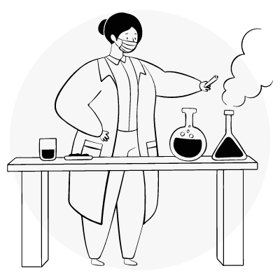

Mas, afinal... O que é plástico?
Quimicamente falando...
Plástico é um material formado pela união de grandes cadeias moleculares chamadas polímeros, que, por sua vez, são formadas por moléculas menores, chamadas monômeros. Os plásticos são produzidos através de um processo químico chamado polimerização, que proporciona a união química de monômeros para formar polímeros.
Os polímeros podem ser naturais ou sintéticos. Os naturais, tais como algodão, madeira, cabelos, chifre de boi, látex, entre outros, são comuns em plantas e animais. Os sintéticos, tais como os plásticos, são obtidos pelo homem através de reações químicas. O tamanho e estrutura da molécula do polímero determinam as propriedades do material plástico.
Refinamento
O plástico é formado a partir do petróleo, que é constituído por uma mistura de compostos orgânicos, principalmente hidrocarbonetos (ricos em carbono e hidrogênio). O processo de refinamento se dá da seguinte forma: nas refinarias, o petróleo cru é destilado e tem como resultado algumas frações: o gás liquefeito, a nafta, a gasolina, o querosene, o óleo diesel, as graxas parafínicas, os óleos lubrificantes e o piche. Para compor o plástico, é necessário submeter as substâncias da fração nafta a um processo de craqueamento térmico (aquecimento na presença de catalisadores). Feito esse processo, são formados os petroquímicos básicos, como etileno e propileno. Depois de outro processo de refinamento, o petroquímicos básicos se transformam em petroquímicos finos, como polietileno, polipropileno, policloreto de vinila, entre outros.